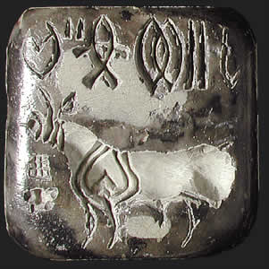

What do the signs mean?Most of the examples of Indus script that we have today come from stone seals found at Indus Valley sites. Experts over the past hundred years have tried to work out the meaning of the signs on these small seals. However, no one has yet been able to read the signs.Without a bilingual text or a very long inscription, reading the Indus script is unlikely. However, scholars can compare the writing to other ancient scripts. They can also think about how the seals might actually have been used in order to work out what type of inscription it might be. Seals were generally used in the ancient world for sealing goods or 'signing' contracts. If the Indus seals were made for this use, the short inscriptions most probably represent titles, proper names, or family names rather than administrative records, personal letters or any kind of literature. 
This steatite seal shows several signs from the Indus Valley script and a 'unicorn'. This was one of the first Indus Valley seals to be found. It was found in about 1872 at the site of the ancient city of Harappa. The animal on this seal is often called the 'unicorn'. Scholars disagree about whether this single-horned animal actually existed, or whether the animal on the seal actually had two horns but was shown in profile. Others believe it represents a mythological creature. |